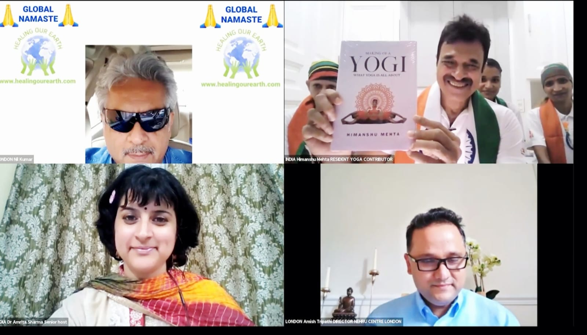

An Inspiring Meeting with Amish Tripathi – Insights on Wisdom, Writing & Purpose
A meeting with Amish Tripathi, one of India's most celebrated authors known for redefining mythology through modern storytelling, was truly an honour and intellectually enriching experience.
View Full Story
A Memorable Meeting with Swami Ramdev – A Landmark Moment for My Book
My meeting with Swami Ramdev became one of the most defining milestones in my journey — culminating in a live book launch on Aastha TV before more than 1,000 students and 30 million viewers.
View Full Story
A Memorable Meeting with Bappi Lahiri – Insights Beyond Music
Meeting with Bappi Lahiri, the legendary music composer and director of Bollywood, was not just a moment of pride — it was an experience filled with warmth, connection, and meaningful exchange.
View Full Story
Meeting with Anu Malik – A Musical Legend's Appreciation for Yoga & Knowledge
Meeting with Anu Malik, one of India's most celebrated music composers and singers, was both an honour and a deeply fulfilling experience.
View Full Story
A Dynamic Dialogue with Dr. Mickey Mehta – Bridging Fitness & Consciousness
Meeting with Dr. Mickey Mehta, India's leading holistic health guru and a pioneer in corporate wellness, was an intellectually stimulating and spiritually grounding experience.
View Full Story
A Heartfelt & Transformational Journey with Pratima Tripathi
What began as a professional banking relationship with Pratima Tripathi evolved into a deep journey of trust, creativity, and emotional bonding that became an integral part of my life and work.
View Full Story
A Remarkable Meeting with Rohit Shetty – From Cinema to Conscious Living
Meeting with Rohit Shetty, one of India's most successful film directors, was an experience that beautifully blended the worlds of cinema and wellness during a special community event.
View Full Story
A Transformative Meeting with Swami Shailendra – Healing & Spiritual Insights
My meeting with Swami Shailendra ji, a revered spiritual guide and the youngest brother of Osho Rajneesh, was a privilege that evolved into a deeply enriching journey of collaboration.
View Full Story
A Memorable Meeting with Twinkle Khanna – Insights, Inspiration & Humor
Meeting with Twinkle Khanna, the accomplished author and wellness enthusiast, was a delightful experience that blended literature, wellness, and authentic connection.
View Full StoryA Purposeful Meeting with Acharya Balkrishna – Where Yoga Meets Ayurveda
A meeting with Acharya Balkrishna, the visionary co-founder of Patanjali Ayurved and a globally respected authority on Ayurveda and natural healing, was both a privilege and an intellectually enriching experience.
View Full StoryMeeting with Bikram Choudhury – Mastery Under Extreme Conditions
My encounter with Bikram Choudhury, the globally renowned founder of Hot Yoga, was an unforgettable experience that pushed my endurance, discipline, and inner focus to extraordinary levels.
View Full StoryA Transformative Meeting with Dr. Hansa Yogendra – My Foundation in Classical Yoga
My meeting with Dr. Hansa Yogendra at The Yoga Institute, Santacruz, stands as one of the most grounding and enriching chapters of my yoga journey — a relationship spanning over 15 years.
View Full StoryA Transformative Meeting with Sadhvi Bhagwati Saraswati – At the International Yoga Festival
My meeting with Sadhvi Bhagwati Saraswati at the International Yoga Festival was a deeply enriching and life-elevating experience — connecting me to a worldwide family of yoga.
View Full StoryA Divine Meeting with Swami Chidanand Saraswati – A Sacred Milestone
My meeting with Swami Chidanand Saraswati at Parmarth Niketan Ashram in 2023 was nothing short of a divine blessing — a moment where he graciously remembered me from years before.
View Full StoryNil Kumar – The Global Architect of Healing & Connections
My journey with Nil Kumar, a visionary leader and a key figure in the "Healing Our Earth" global movement, has been a testament to the power of purposeful connections and shared visions.
View Full Story